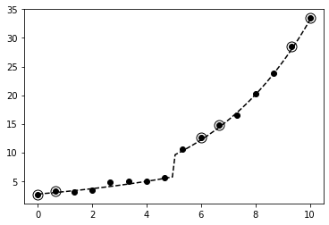

Optimización usando ridge regression¶
30 min | Ultima modificación: Marzo 11, 2020
Preparación
[1]:
import math
import matplotlib.pyplot as plt
import numpy as np
import pandas as pd
%matplotlib inline
Función a aproximar usando un modelo de regresión¶
[2]:
def f(x):
result = [math.exp(0.15 * u + 1) if u < 5 else math.exp(0.25 * u + 1) for u in x]
return np.array(result)
[3]:
np.random.seed(12345)
x_real = np.linspace(start=0, stop=10, num=100)
x_data = np.linspace(start=0, stop=10, num=16)
d_real = f(x_real)
d_data = f(x_data) + np.random.normal(0, 0.4, len(x_data))
plt.plot(x_real, d_real, "--", color="gray")
plt.plot(x_data, d_data, "o", color="black")
plt.show()

[4]:
#
# se generan dos variables adicionales u y z, que son
# colineales con la variable original x
#
u_data = x_data + np.random.uniform(-0.3, 0.3, 16)
z_data = x_data + np.random.uniform(-0.3, 0.3, 16)
u_real = x_real + np.random.uniform(-0.3, 0.3, 100)
z_real = x_real + np.random.uniform(-0.3, 0.3, 100)
Partición del conjunto de datos¶
[5]:
# selecciona aleatoriamente 10 elementos del conjunto de datos
index = sorted(np.random.choice(len(x_data), 10, replace=False))
# muestra usada para estimar los parámetros del modelo
x_fit = x_data[index]
u_fit = u_data[index]
z_fit = z_data[index]
d_fit = d_data[index]
# muestra usada para evaluar la generalización
x_test = np.delete(x_data, index)
d_test = np.delete(d_data, index)
[6]:
plt.plot(x_data, d_data, "o", color="black")
plt.plot(x_real, d_real, "--", color="black")
plt.plot(x_test, d_test, "o", color="black", fillstyle="none", markersize=11)
;

Modelo de regresión¶
\[y_p = g(x_p, u_p, z_p) = \exp(w_0 + w_1 x_p + w_2 u_p + w_3 z_p)\]
[7]:
def g_data(w):
return np.exp(w[0] + w[1] * x_data + w[2] * u_data + w[3] * z_data)
[8]:
def g_real(w):
return np.exp(w[0] + w[1] * x_real + w[2] * u_real + w[3] * z_real)
Función de pérdida cuadrática (suma de errores al cuadrado)¶
\[\text{SSE}(w) = \sum_p [d_p - g(x_p, u_p, z_p)]^2\]
[9]:
def SSE(w):
y = g_data(w)
y_fit = y[index]
y_test = np.delete(y, index)
sse_fit = sum(np.power(d_fit - y_fit, 2))
sse_test = sum(np.power(d_test - y_test, 2))
#
# note que la función devuelve simultaneamente
# los errores de ajuste y prueba
#
return sse_fit, sse_test
Gradiente del modelo de regresión¶
\[\begin{split}\begin{split}
\frac{\partial}{\partial w} g(x_p, u_p, z_p)
& = \frac{\partial}{\partial w} \left[ \exp( w_0 + w_1 * x_p + w_2 * u_p + w_3 * z_p ) \right] \\
\\
& = [g(x_p, u_p, z_p), x_p * g(x_p, u_p, z_p), u_p * g(x_p, u_p, z_p), z_p * g(x_p, u_p, z_p)]
\end{split}\end{split}\]
[10]:
def gg(w):
result = []
f = g_data(w)
for a, b, c in zip(x_data, u_data, z_data):
m = math.exp(w[0] + w[1] * a + w[2] * b + w[3] * c)
result += [[m, a * m, b * m, c * m]]
return result
Gradiente de la función de pérdida¶
\[\begin{split}\begin{split}
\frac{\partial}{\partial w}\text{SSE}(w)
& = \sum_p -2 \times [d_p - g(x_p, u_p, z_p)] \times \frac{\partial}{\partial w} g(x_p, u_p, z_p) + \sum_m 2 \lambda w_m \\
& = -2 \sum_p e_p \times \frac{\partial}{\partial w} g(x_p, u_p, z_p) + \sum_m 2 \lambda w_m
\end{split}\end{split}\]
[11]:
def gSSE(w):
y = g_data(w)
y_fit = y[index]
e_fit = d_fit - y_fit
grd = gg(w)
grd = [u for i, u in enumerate(grd) if i in index]
grd = [[-2.0 * e_fit[i] * u for u in g] for i, g in enumerate(grd)]
grd = [[g[icol] for g in grd] for icol in range(len(w))]
grd = [sum(u) for u in grd]
return grd
Corrección de los parámetros¶
\[\mathbf{w}_k = \mathbf{w}_{k-1} - \mu \frac{\partial}{\partial \mathbf{w}} \text{SSE}(\mathbf{w}_{k-1})\]
[12]:
def mejora(w, mu):
grd = gSSE(w)
w = [u - mu * g for u, g in zip(w, grd)]
return w
Proceso iterativo usando gradiente descendente¶
[13]:
w = [1.0, 0.25, 0.1, 0.1] # coeficientes iniciales
alpha = 0.0000000001
sse_fit, sse_test = SSE(w)
history_sse_fit = [sse_fit]
history_sse_test = [sse_test]
for epoch in range(40000):
w = mejora(w, alpha)
sse_fit, sse_test = SSE(w)
history_sse_fit.append(sse_fit)
history_sse_test.append(sse_test)
y_real = g_real(w)
plt.plot(history_sse_fit, "--k")
plt.plot(history_sse_test, "--r")
plt.show()

[14]:
plt.plot(x_data, d_data, "o", color="black")
plt.plot(x_real, d_real, "--", color="black")
plt.plot(x_real, y_real, color="red")
plt.plot(x_test, d_test, "o", color="black", fillstyle="none", markersize=11)
plt.show()

[15]:
SSE(w)
[15]:
(21.350259398156254, 2.272720487103581)
[16]:
w
[16]:
[0.9915167089763974,
0.18465470423524666,
0.035041509185601775,
0.03572874285812191]
Ridge regression¶
Función de pérdida penalizada¶
\[\text{SSE}(w) = \sum_p [d_p - g(x_p, u_p, z_p)]^2 + \lambda \sum_m w_m^2\]
Gradiente de la función de pérdida¶
\[\begin{split}\begin{split}
\frac{\partial}{\partial w}\text{SSE}(w)
& = \sum_p -2 \times [d_p - g(x_p, u_p, z_p)] \times \frac{\partial}{\partial w} g(x_p, u_p, z_p) + \sum_m 2 \lambda w_m \\
& = -2 \sum_p e_p \times \frac{\partial}{\partial w} g(x_p, u_p, z_p) + \sum_m 2 \lambda w_m
\end{split}\end{split}\]
[17]:
def gPen(w):
return [2 * u for u in w]
[18]:
def mejora_ridge(w, mu, lamb):
grd_sse = gSSE(w)
grd_pen = gPen(w)
grd = [u + lamb * v for u, v in zip(grd_sse, grd_pen)]
w = [u - mu * g for u, g in zip(w, grd)]
return w
[30]:
w = [1.0, 0.25, 0.1, 0.1] # coeficientes iniciales
alpha = 0.0000000001
lamb = 1000.0
sse_fit, sse_test = SSE(w)
history_sse_fit = [sse_fit]
history_sse_test = [sse_test]
sse_test_previous = None
for epoch in range(40000):
w = mejora_ridge(w, alpha, lamb)
sse_fit, sse_test = SSE(w)
history_sse_fit.append(sse_fit)
history_sse_test.append(sse_test)
y_real = g_real(w)
plt.plot(history_sse_fit, "--k")
plt.plot(history_sse_test, "--r")
;

[31]:
plt.plot(x_data, d_data, "o", color="black")
plt.plot(x_real, d_real, "--", color="black")
plt.plot(x_real, y_real, color="red")
plt.plot(x_test, d_test, "o", color="black", fillstyle="none", markersize=11)
plt.show()

[32]:
SSE(w)
[32]:
(19.75511526525803, 1.3073650608058909)
[33]:
w
[33]:
[0.9837048404980291,
0.183851821280731,
0.03542570210639068,
0.03610192080045692]
Ejercicio.— Cómpute el valor óptimo de la penalización.